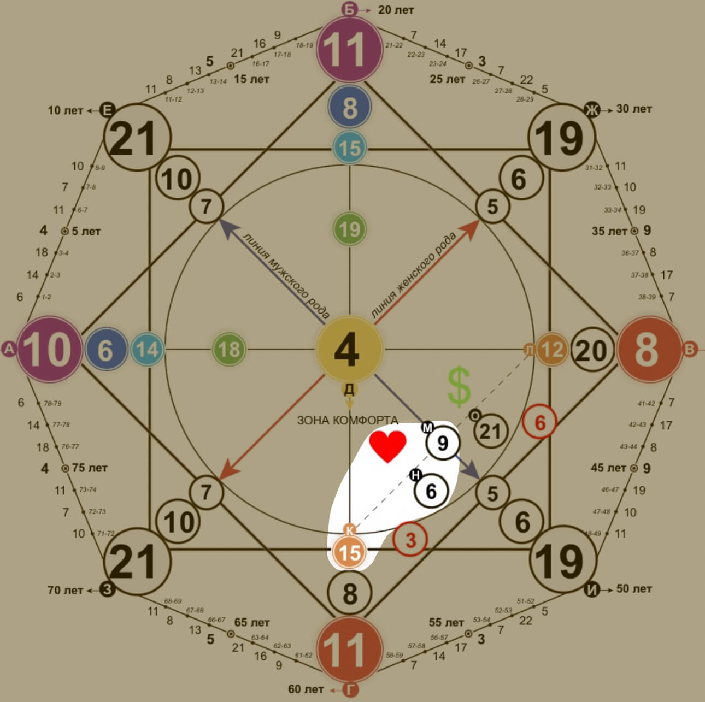

Канал отношений
Канал отношений. Эти 3 энергии расскажут о наиболее подходящем партнере, как обладатель матрицы проявляет себя в отношениях, возможные конфликты и проблемы.
Нижний энергия (15) - точка входа в отношения, находится в области кармического хвоста. Непроработанная карма прошлого воплощения блокирует вход в счастливые отношения, поэтому карму нужно прорабатывать в первую очередь. Возможно ваши отношения повторяются, все события очень схожи, меняется только внешний вид партнёра - это тоже знак непроработанной кармы, означающий, что из "минуса" нужно выходить "в плюс".
Средняя энергия (6) - образ вашего партнёра, общий характер отношений.
Верхняя энергия (9) - указывает на проблемы в отношениях, находится в области материальной кармы, то есть непосредственно влияет как на ваши отношения, так и на финансы.
6 енергия - Любовь, отношения, выбор
Для чего вам даются отношения в жизни?
Для понимания безусловной любви: к себе, к людям, к миру. Отношения научат любить себя и выбирать своё счастье. Чем больше вы проявляете любовь, тем больше вам возвращается. Не искать любовь в других людях, а найти в себе.
В минусе:
Проблемы в паре могут быть от отсутствия любви к себе, неуверенность, отсутствие коммуникации между вами. Также через измены, грубость и обман. Через жестокость, эгоизм. Через «болезненные» привязки к партнеру и излишнюю идеализацию.
Рекомендации:
Искусство и творчество занимает отдельное место в сердце 6 энергии. Ваши отношения буду наполнять посредством ваших любимых хобби/походов в музеи и театры/лекций на тему искусства, красоты, эстетики.
И на десерт гармония. Приведите вашу жизнь в порядок, уберите весь шлак и ненужных людей. Окружите себя теплом и уютом, красивыми вещами и приятными воспоминаниями. Найдите ваш стиль и не бойтесь его транслировать, визуал то, к чему нужно прийти.
15 энергия - Проявление, искушения, теневая сторона.
Это партнёрская карма (Нижняя энергия)
Могут быть проблемы через агрессию партнера, ссоры, обиды, приминение силы, от зависимостей партнера (алкоголь, наркотики, игромания), от ревности, если у партнера нет финансов. От постоянного желания иметь «острые эмоции», потому что вы подсознательно ищете себе типаж мужчины «bad boy»(плохой парень).
Совет:
Чтобы держать отношения в балансе, научитесь принимать свои темные стороны и партнера.
Ваша задача принять свои особенности, развивать их и использовать во благо. Вы можете рассмотреть потенциал в человеке и помочь ему раскрыться. Личным примером показать, как избавление или укрощение своих зависимостей приводит к гармоничной жизни, с самим собой. Ваша роль обнажать пороки людей, но нельзя это выносить на всеобщее обозрение. Вы склонны к манипуляции и зависимостям, не склоняйте к этому других. Порой иногда вам нужно дойти до дна, чтобы оттолкнуться и подняться еще выше. Чтобы переосмыслить свою жизнь, цели и ценности.
Духовно развивайтесь, принимая свою теневую сторону. И не сокрушайтесь над несовершенством этого мира.
9 энергия - Отшельник, мудрец, глубинные знания. (Верхняя зона)
Для чего вам даются отношения в жизни, чему должны научить?
Для познания глубины, мудрости, понимания своего пути, осознанности, самодостаточности и уважения к партнеру. Возможна большая разница в возрасте с партнером.
Проблемы в паре могут быть через: закрытость пары от социума, безразличия к жизни, чрезмерный аскетизм, отсутствие понимания, мудрости, терпения, нежелание одного из партнеров развиваться, отсутствие личного пространства, чтобы побыть наедине с собой. Страх одиночества, неумение находиться в первую очередь наедине с собой.
Совет: не закрывайтесь от людей, больше общаетесь и проводите время вне дома. Не пытайтесь перевоспитать партнера, уважайте личное пространство друг друга и позволяйте себе и партнеру проводить время отдельно.